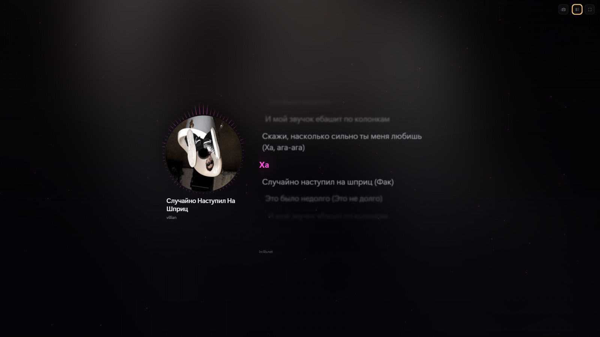
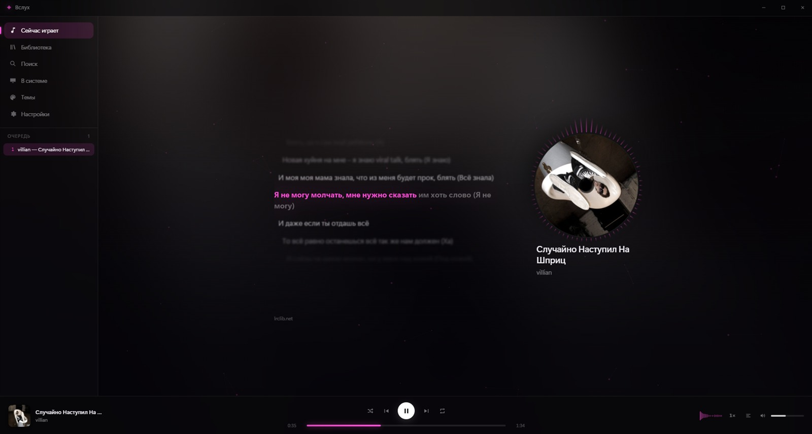
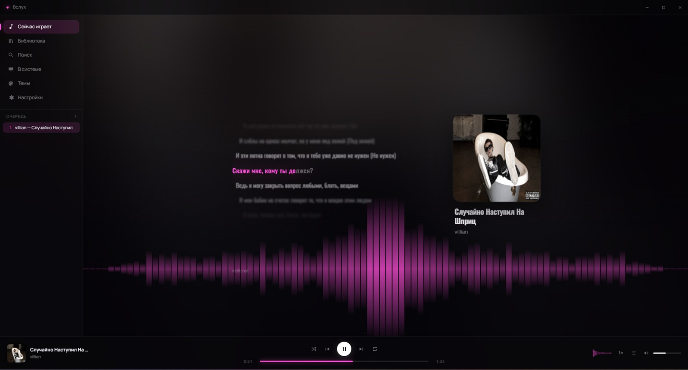
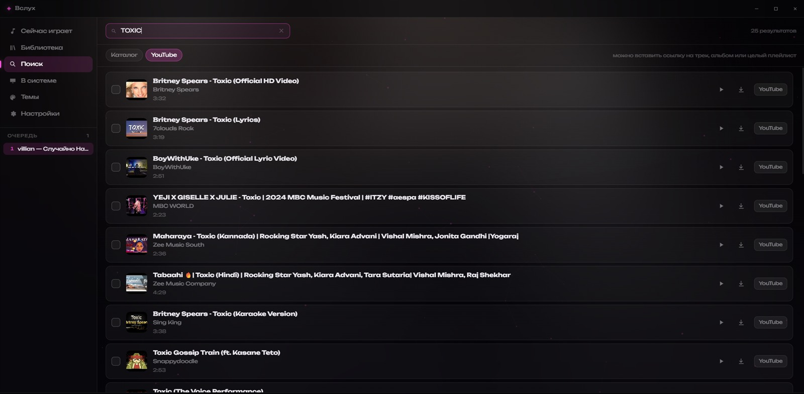
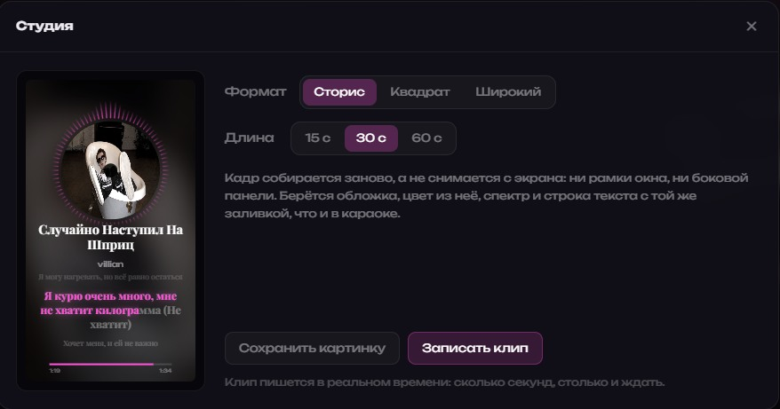

Вслух
Музыкальный плеер для Windows, в котором строка заливается по словам — ровно по мере того, как её поют. А музыку, которой у тебя нет, он найдёт и скачает сам.
Windows 10 или 11, 64 бита. Бесплатно, открытый код, никакой регистрации.

Караоке
Строка догорает ровно в такт
Не вся разом, как в большинстве плееров, а слово за словом — и цветом, взятым из обложки альбома, а не заранее прошитым в тему.
Текст плеер ищет сам. Если рядом с файлом лежит твой собственный .lrc — он главнее интернета. Строку можно сдвинуть на доли секунды, если запись отстаёт.
Показать его можно одиннадцатью способами: буквами, стоящими контуром и загорающимися изнутри; следом маркера, ползущим по строке; волной, которая приподнимает слова; или вовсе одним-единственным словом во весь экран — тем самым, которое поют прямо сейчас.

Вид
Восемнадцать визуализаций с живого спектра
Аврора, сфера, калейдоскоп, ливень, пульсар, лента, кольцо, круговая волна, осциллограф, столбики, пыль, туннель, водопад-спектрограмма, зеркало, спираль, лепестки, варп, горизонт. Все рисуются со звука, а не крутятся по таймеру.
У каждой своя скорость и насыщенность — последнюю стоит убавить, если картинка спорит с текстом песни. А можно и вовсе не выбирать: плеер умеет менять вид сам, со сменой трека или по таймеру.
Плюс шестнадцать готовых тем, пять раскладок экрана, свой цвет или фон по ссылке — и полноэкранный режим, где не остаётся ничего, кроме музыки.

Библиотека
Своей музыки нет? Это поправимо
Поиск по YouTube прямо в плеере: по одному, пачками или целым плейлистом по ссылке. Очередь с паузой и отменой — можно поставить полсотни треков и заниматься своими делами.
Скачанное сразу попадает в библиотеку: артист, альбом и обложка подставляются сами.

Студия
Вынести песню наружу
Карточка картинкой или клип в mp4 со звуком — под сторис, квадрат или широкий.
Кадр собирается заново, а не снимается с экрана: ни рамки окна, ни боковой панели. Обложка, цвет из неё, спектр и строка текста с той же заливкой, что и в караоке.

И по мелочи
- Профили оформления
- Настроил вид под себя — сохранил. Дальше переключаешься одним нажатием.
- Видит соседей
- Показывает и переключает то, что играет в Spotify, Яндекс Музыке, браузере, AIMP, Telegram.
- Эквалайзер
- Десять полос и готовые наборы. Скорость от 0,5× до 2× — с тоном или без.
- Горячие клавиши
- Работают поверх других окон. Медиа-клавиши можно забрать себе.
- Статус в Discord
- Видно, что ты слушаешь. На паузе прячется.
- Таймер сна
- Досчитает до нуля и плавно уведёт звук.
- Бэкап
- Плейлисты, избранное и настройки — одним файлом, туда и обратно.
- Обновляется сам
- Проверяет версию при запуске, но не качает и не ставит без спроса.
- Ничего о тебе не знает
- Ни аккаунта, ни аналитики. В сеть ходит за текстами, обложками и обновлением.
Установка
Две минуты, одна странность
Windows покажет синее окно
«Система Windows защитила ваш компьютер». Так бывает с любой программой без платной подписи разработчика — у меня её пока нет. Чтобы поставить: «Подробнее» → «Выполнить в любом случае».
Не веришь на слово — проверь
Сверь контрольную сумму скачанного файла. В PowerShell:
Get-FileHash "путь\к\Vsluh-Setup-1.2.0.exe" -Algorithm SHA256
Должно получиться ровно это:
8b2931e97f96de5552e0b61ccc0f3d415bc08a18535a98d91b5b73a2ac54e748
Не сошлось — файл скачался битым или это не он. Ставить не надо. Сумма относится к версии 1.2.0; для других версий она указана на странице релиза.
Первый запуск
- Плеер попросит папку с музыкой — покажи, где она лежит.
- Если своих файлов нет, зайди в Настройки → Стриминг и нажми «Скачать yt-dlp». Без этой маленькой программы не работают поиск, скачивание и плейлисты. Плеер возьмёт её с официальных релизов и сверит контрольную сумму сам.
Чего он не умеет
Эквалайзер, визуализация и запись клипа работают со своих файлов. У YouTube и SoundCloud звук играет внутри их плеера — снять его оттуда нельзя, поэтому на стриминговых треках эти три вещи недоступны.